전자기사 (2019-09-21 기출문제)
1과목: 전기자기학
1. 평행판 콘덴서의 판 사이가 진공으로 되어 정전 용량이 C0인 콘덴서가 있다. 이 콘덴서에 유전체를 삽입하여 정전 용량 C를 얻었다. 다음 중 틀린 것은?
- 유전체를 삽입한 콘덴서의 정전 용량 C는 진공인 때의 정전 용량 C0보다 커진다.
- 삽입된 유전체 내의 전계는 판 사이가 진공인 경우의 전계보다 강해진다.
- 두 정전 용량의 비(C/C0)는 유전체 종류에 따라 정해지는 상수이며 비유전율이라 부른다.
- 유전체의 분극의 세기 P는 분극에 의하여 발생된 전하 밀도와 같다.
(정답률: 45%)

2. 무한 평면 도체표면에서 수직거리 d(m)만큼 떨어진 곳에 점전하 +Q(C)가 있다. 영상전하(image charge)와 평면도체 간에 작용하는 힘 F(N)는?
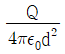
, 반발력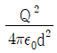
, 흡인력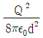
, 반발력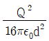
, 흡인력
(정답률: 50%)
3. 유전체의 경계조건에 대한 설명으로 틀린 것은?
- 표면전하 밀도란 구속전하의 표면밀도를 말하는 것이다.
- 완전 유전체 내에서는 자유전하는 존재하지 않는다.
- 경계면에 외부 전하가 있으면, 유전체의 내부와 외부의 전하는 평형되지 않는다.
- 특수한 경우를 제외학 경계면에서 표면전하 밀도는 영(zero)이다.
(정답률: 16%)
4. 전류에 의한 자계의 방향을 결정해 주는 것은?
- 플레밍의 오른손 법칙
- 암페어의 오른나사 법칙
- 비오 사바르의 법칙
- 렌츠의 법칙
(정답률: 43%)
5. 0.2 Wb/m2의 평등자재 속에 자계와 직각방향으로 놓인 길이 30cm인 도선을 자계와 30도의 방향으로 30m/s의 속도로 이동시킬 때, 도체 양단에 유기되는 기전력은 몇 V 인가?
- 0.3
- 0.6
- 0.9
- 1.2
(정답률: 69%)
6. 그림과 같이 두 개의 코일이 직렬로 연결되어 있다. 이 회로에 0.5A에 전류를 흘릴 때 이 합성코일에 축적되는 에너지는 몇 J 인가? (단, L1= 20mH, L2 = 40mH, 결합계수 k = 0.5 이다.)
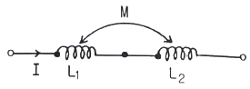
- 1.1 × 10-4
- 2.2 × 10-4
- 1.1 × 10-2
- 2.2 × 10-2
(정답률: 45%)
7. 자기인덕턴스 L의 단위는?
- V
- A
- T
- H
(정답률: 74%)
8. 비유전율 εr = 80, 비투자율 μr = 1인 전자파의 고유임피던스는 약 몇 Ω 인가?
- 21
- 42
- 80
- 160
(정답률: 50%)
9. 물(εr=80, μr=1) 속에서 전자파의 속도는 약 몇 m/s인가?
- 3.35 × 107
- 2.67 × 108
- 3.0 × 109
- 9.0 × 109
(정답률: 43%)
10. 영구자석에 관한 설명으로 틀린 것은?
- 한번 자화된 다음에는 자기를 영구적으로 보존하는 자석이다.
- 보자력이 클수록 자계가 강한 영구자석이 된다.
- 잔류 자속밀도가 클수록 자계가 강한 영구자석이 된다.
- 자석 재료로 폐회로를 만들면 강한 영구자석이 된다.
(정답률: 64%)
11. 동심구형 콘덴서의 내외 반지름을 각각 10배로 증가시키면 정전용량은 몇 배로 증가하는가?
- 5
- 10
- 20
- 100
(정답률: 47%)
12. 반경 a인 구도체에 –Q의 전하를 주고 구도체의 중심 O에서 10a되는 점 P에 10Q의 점전하를 놓았을 때, 직선 OP위의 점 중에서 전위가 0이 되는 지점과 구도체의 중심 O와의 거리는?
- a/5
- a/2
- a
- 2a
(정답률: 27%)
13. 정전류가 흐르고 있는 무한 직선도체로부터 수직으로 0.1m만큼 떨어진 점의 자계의 크기가 100AT/m 이면 0.2m 만큼 떨어진 점의 자계의 크기(AT/m)는?
- 50
- 40
- 30
- 20
(정답률: 67%)
14. 다음 중 무한 솔레노이드에 전류가 흐를 때에 대한 설명으로 가장 알맞은 것은?
- 내부 자계는 위치에 상관없이 일정하다.
- 내부 자계와 외부 자계는 그 값이 같다.
- 외부 자계는 솔레노이드 근처에서 멀어질수록 그 값이 작아진다.
- 내부 자계의 크기는 0 이다.
(정답률: 22%)
15. 면적 A(m2), 간격 d(m)인 평행판 콘덴서의 전극판에 비유전율 εr인 유전체를 가득 채웠을 때 전극판 간에 전압 V(V)를 가하면 전극판을 떼어내는데 필요한 힘은 몇 N 인가?
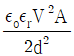
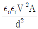
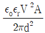
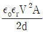
(정답률: 27%)
16. 변위 전류와 가장 관계가 깊은 것은?
- 반도체
- 유전체
- 자성체
- 도체
(정답률: 60%)
17. 두 개의 자극판이 놓여 있을 때 자계의 세기 H(AT/m), 자속밀도 B(Wb/m2), 투자율 μ(H/m)인 곳의 자계의 에너지밀도(J/m3)는?
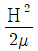
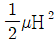
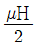
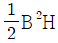
(정답률: 65%)
18. 환성철심 코일에 5A의 전류를 흘려 2000AT의 기자력을 생기게 하려면 코일의 권수(회)는?
- 10000
- 500
- 400
- 250
(정답률: 67%)
19. 자성체에 외부의 자계 H0를 가하였을 때 자화의 세기 J와의 관계식은? (단, N은 감자율, μ는 투자율이다.)
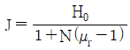
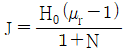
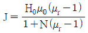
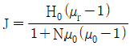
(정답률: 42%)
20. 무한장 선전하와 무한평면 전하에서 r(m) 떨어진 점의 전위는 각각 몇 V 인가? (단, ρL은 선전하밀도, ρs는 평면전하밀도이다.)
- 무한직선 : ∞, 무한평면도체 : ∞
- 무한직선 :
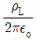
, 무한평면도체 :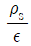
- 무한직선 :
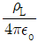
, 무한평면도체 :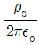
- 무한직선 :
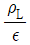
, 무한평면도체 : ∞
(정답률: 27%)
2과목: 회로이론
21. 코일과 콘덴서에서 실제로 급격히 변화할 수 없는 것은?
- 코일에서 전류, 콘덴서에서 전류
- 코일에서 전압, 콘덴서에서 전압
- 코일에서 전압, 콘덴서에서 전류
- 코일에서 전류, 콘덴서에서 전압
(정답률: 47%)
22. L1 = 20H, L2 = 5H인 전자 결합회로에서 결합계수 K = 0.5일 때 상호인덕턴스 M은 몇 H 인가?
- 5
- 7.5
- 8
- 9
(정답률: 60%)
23. 오버슈트(overshoot)의 정의로 옳은 것은?
- 최종치의 90%에 도달하는 시간
- 과도 시간 중 최초의 피크치와 최종치의 차이
- 응답이 최초로 목표값이 50%가 되는데 필요한 시간
- 응답이 요구되는 오차 이내로 정착되는데 필요한 시간
(정답률: 53%)
24. 다음 회로망은 T형 회로 및 π형 회로의 종속 접속으로 이루어졌다. 이 회로망의 ABCD 파라미터 중 틀린 것은?
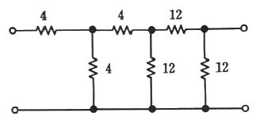
- A = 7
- B = 48
- C = 6
- D = 7
(정답률: 40%)
25. 선형 회로에서 시변 용량을 갖는 커패시터의 전류 i(t)는?
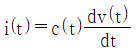
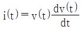
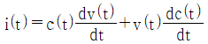
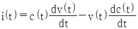
(정답률: 32%)
26. RL 직렬회롤에서 t=0일 때 직류 전압 100V를 인가하면, 흐르는 전류 i(t)는 몇 A 인가? (단, R = 50Ω, L = 10, i(0) = 0 이다.)
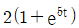
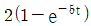
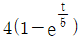
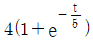
(정답률: 47%)
27. te-t의 Laplace 변환값은?
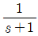
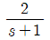
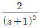
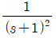
(정답률: 53%)
28. 입력신호가 감쇠되지 않고 잘 통과되는 주파수 범위를 나타내는 용어는?
- 저지 대역
- 상한 차단 주파수
- 통과 내역
- 하한 차단 주파수
(정답률: 63%)
29. 이상적인 전류원의 내부 임피던스 Z는?
- Z = 0
- Z = 1Ω
- Z = ∞
- Z는 정해지지 않는다.
(정답률: 43%)
30. 다음 회로에서 전류 i1은 약 몇 A 인가?
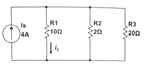
- 0.12
- 0.32
- 0.62
- 0.92
(정답률: 48%)
31. 그림과 같은 저역통과 RC회로에 스텝입력전압(step input voltage)을 가했을 때 출력전압의 설명으로 옳은 것은? (단, 커패시터 C의 초기전압은 0 이다.)
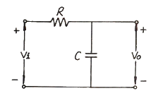
- 계단파형이 나타난다.
- 0부터 지수적으로 증가한다.
- 처음에는 계단전압으로 변했다가 지수적으로 감쇠한다.
- 직류성분이 나타나지 않는다.
(정답률: 34%)
32. 0.4mH인 코일에 흐르는 전류가
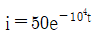
mA라 하면 t = 0 일 때 코일 양단전압의 절대치는 몇 V 인가?- 0.2
- 2
- 5
- 50
(정답률: 38%)
33. 다음 전류파형의 실효치(RMS)는?
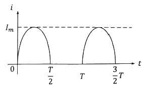
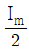
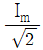
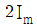
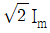
(정답률: 34%)
34. 전압 e(t) = e-t + 2e-2t의 라플라스 변환 E(s)는?
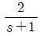
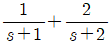
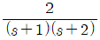
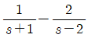
(정답률: 53%)
35. 다음의 단위 임펄스 함수(unit impulse function) δ(t)에 관한 설명으로 옳은 것은?
- 폭은 거의 0이고 높이는 거의 무한대가 되며 면적은 1이 되는 펄스이다.
- 임의 회로망의 입력전압으로 δ(t)를 가하면 출력 전압은 입력전압과 같게 된다.
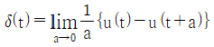
- 단위 램프 함수(unit ramp function)를 미분한 것이다.
(정답률: 47%)
36. 어떤 코일에 흐르는 전류가 0.01s 사이에 일정하게 50A로부터 30A로 변할 때, 20V의 기전력이 발생한다고 하면 자기인덕턴스는 몇 mH인가?
- 5
- 10
- 15
- 20
(정답률: 44%)
37. 다음 신호
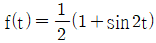
에 대한 라플라스 변환은?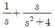
(정답률: 47%)
38. RLC 병렬공진회로에 대한 양호도(Qo : Quality factor)의 표현으로 옳은 것은?
(정답률: 54%)
39. 1000mH인 코일의 리액턴스가 377Ω일 때 주파수는 약 몇 Hz인가?
- 6
- 36
- 60
- 360
(정답률: 56%)
40. 다음 그림과 같은 4단자 회로망에서 4단자 정수를 ABCD 파라미터로 나타낼 때 A는? (단, A는 개방 역방향 전압이득이다.)
- Z1
- 1
(정답률: 44%)
3과목: 전자회로
41. 레큘레이터 IC의 정전압조정기가 무부하 출력전압 10.55V, 최대 부하 출력전압 10.49V 일 때, 백분율로 표현된 부하전압 변동률은 약 몇 % 인가?
- 0.384
- 0.572
- 0.716
- 0.924
(정답률: 50%)
42. 다이오드에 대한 설명 중 틀린 것은?
- 다이오드에 역방향 전압을 가하면 공핍영역은 넓어진다.
- 다이오드의 항복(breakdown)현상은 순방향 전압이 과도하면 발생한다.
- P형 반도체는 3가 원소를 도핑함으로써 얻을 수 있다.
- 다이오드에 순방향 전압을 가했을 때 흐르는 전류는 주로 포화전류에 의한 것이다.
(정답률: 38%)
43. 다음의 단상반파 정류회로에서 입력신호가 e = √2·100·sin(50×2πt) V일 때, 직류 전압 평균치 Edc는 약 몇 V 인가? (단, R = 10Ω이고, 다이오드는 이상적인 소자)
- 141
- 90
- 70
- 45
(정답률: 7%)
44. 펄스 반복주파수 600Hz, 펄스폭 1.5μs인 펄스의 충격계수 D(Duty factor)는?
- 3×10-4
- 6×10-4
- 9×10-4
- 12×10-4
(정답률: 62%)
45. 다음 연산증폭기 회로에서 출력 임피던스는 약 몇 Ω인가? (단, 개루프 전압증폭도 A는 10000이고, 출력임피던스는 50Ω 이다.)
- 0.1
- 0.5
- 1.0
- 5.0
(정답률: 34%)
46. 슬루 레이트(slew rate)의 단위는?
- μs/V
- μs/A
- V/μs
- A/μs
(정답률: 32%)
47. 연산증폭기를 이용한 가중가산기(weighted-sum)에서 Rf=30kΩ이고, vo = -(v1+2v2+3v3)일때 R1, R2, R3는 각각 얼마인가?
- R1 = 30kΩ, R2 = 15kΩ, R3 = 10kΩ
- R1 = 10kΩ, R2 = 15kΩ, R3 = 30kΩ
- R1 = 60kΩ, R2 = 30kΩ, R3 = 15kΩ
- R1 = 15kΩ, R2 = 30kΩ, R3 = 60kΩ
(정답률: 57%)
48. 발진 회로의 발진의 조건을 옳은 것은?
- 귀환 루프의 위상 천이가 0°이다.
- 귀환 루프의 위상 천이가 180°이다.
- 귀환 루프의 이득이 0 이다.
- 귀환 루프의 이득이 1/2 이다.
(정답률: 20%)
49. 단위이득주파수 fT가 125MHz인 트랜지스터가 대역폭 주파수 영역에서 전압이득이 26dB인 증폭기로 사용될 때 이상적으로 가질 수 있는 대역폭은 약 몇 MHz인가? (단, 저역 차단주파수는 없다.)
- 9.6
- 6.25
- 4.8
- 12.5
(정답률: 29%)
50. 다음은 이상적인 연산 증폭기를 사용한 차동증폭기이다. 출력전압 Vo는 몇 V 인가?
- 5
- 5/2
- 5/4
- 2
(정답률: 6%)
51. 다음의 트랜지스터 회로에서 VCC가 10V, RB가 300kΩ이고 RC가 1kΩ일 때, 베이스전류 IB 컬렉터-이미터 전압 VCE로 옳은 것은? (단, VBE = 0.7V이고, β = 100 이다.)
- IB = 31 μA, VCE = 6.9V
- IB = 310 μA, VCE = 6.9V
- IB = 3.1 mA, VCE = 9.3V
- IB = 3.1 μA, VCE = 9.3V
(정답률: 34%)
52. 출력 전압파형이 입력파형과 똑같은 형태를 갖는 증폭기는? (단, 위상 무시)
- A급 증폭기
- B급 증폭기
- C급 증폭기
- AB급 증폭기
(정답률: 28%)
53. 이 회로의 동작으로 적절한 논리식은?
(정답률: 23%)
54. 전가산기를 반가산기 몇 개와 어떤 논리게이트 몇 개로 구성하는 것이 가장 적당한가?
- 반가산기 2개, AND 게이트 1개
- 반가산기 2개, OR 게이트 2개
- 반가산기 3개, OR 게이트 1개
- 반가산기 2개, OR 게이트 1개
(정답률: 29%)
55. 부궤환 증폭기에 대한 설명 중 옳은 것은?
- 이득만 감소되고 기타 특성에는 변화가 없다.
- 이득이 커지고, 잡음, 왜율, 대역폭 특성이 개선된다.
- 이득이 감소되는 반면 잡음, 왜율, 대역폭은 증가된다.
- 이득, 잡음, 왜율은 감소되는 반면 대역폭이 넓어진다.
(정답률: 30%)
56. 아래는 7 세그면트 LED 디스플레이의 진리표이다. a~g의 세그먼트 중에서 d세그먼트를 동작시키기 위한 출력 Yd의 논리회로의 식은? (단, 1010 ~ 1111은 don't care 조건이다.)
(정답률: 36%)
57. 트랜지스터 회로가 선형영역에서 동작할 때의 관계식으로 틀린 것은?
(정답률: 34%)
58. B급 푸시풀(push-pull) 증폭기의 직류 공급 전력은? (단, VCC는 공급 전압, Im은 최대 컬렉터 전류이다.)
(정답률: 22%)
59. 어떤 차동증폭기의 차동이득은 1000이며, 동상이득은 0.1일 때, 동상신호 제거비 CMRR은 몇 dB인가?
- 10,000
- 1000
- 80
- 60
(정답률: 27%)
60. 다음 회로의 입출력 특성곡선으로 적절한 것은? (단, R = 10Ω, 다이오드는 이상적인 소자이며, slope은 절댓값이다.)
(정답률: 30%)
4과목: 물리전자공학
61. 접합형 트랜지스터에서 스위칭 작업에 필요한 동작영역은?
- 포화 영역, 활성 영역
- 활성 영역, 차단 영역
- 포화 영역, 차단 영역
- 활성 영역, 역활성 영역
(정답률: 27%)
62. 다음 중 에너지밴드에 속하지 않는 것은?
- 전도대
- 금지대
- 가전자대
- 전기대
(정답률: 36%)
63. 진성 반도체에 대한 설명 중 틀린 것은?
- 반도체의 저항 온도계수는 양(+)이다.
- 운반체(carrier)의 밀도는 온도가 상승하면 증가한다.
- Fermi 준위는 어떤 온도와 관계없이 금지대의 중앙에 위치한다.
- 전자의 농도와 정공의 농도는 같다.
(정답률: 19%)
64. 물질에서 직접적으로 전자가 방출될 수 있는 조건이 아닌 것은?
- 열을 가한다.
- 빛을 가한다.
- 전계를 가한다.
- 압축을 한다.
(정답률: 47%)
65. 열전자 방출을 할 때 전계에 의해서 일함수가 적어져서 열전자 방출이 쉬워지는 현상을 무엇이라 하는가?
- Schottk 효과
- Zeemann 효과
- Seebeck 효과
- Hall 효과
(정답률: 34%)
66. 터널 효과의 가능성을 나타내는 원리는 어느 것인가?
- 제벡 효과
- 상대성 원리
- 드브로이 방정식
- 슈뢰딩거의 파동방정식
(정답률: 30%)
67. 어느 열음극의 일함수(work functuon)의 값이 1/2로 되면 열전자 전류밀도는 어떻게 되는가?
- 배
- 배
- 배
- 배
(정답률: 8%)
68. 순방향 바이어스전압이 PN접합 다이오드 양단에 인가될 때 공핍층 가까이에서 소수캐리어의 농도의 변화는 어떻게 되는가?
- P형 영역과 N형 영역에서 동시에 증가한다.
- P형 영역과 N형 영역에서 동시에 감소한다.
- P형 영역에서 증가하고, N형 영역에서 감소한다.
- N형 영역에서 증가하고, P형 영역에서 감소한다.
(정답률: 24%)
69. 터널 다이오드(tunnel diode)의 설명 중 틀린 것은?
- 부성 저항 특성을 나타낸다.
- 마이크로파 발진용으로 사용된다.
- 공간 전하층이 일반 다이오드 보다 넓다.
- 역바이어스 상태에서 전도성이 양호하다.
(정답률: 25%)
70. 트랜지스터 제조시 컬렉터 내부용량과 베이스 저항을 작게 하는 이유로 가장 적절한 것은?
- 순방향 특성을 개선하기 위하여
- 고주파 특성을 개선하기 위하여
- 역방향 내전압을 증가시키기 위하여
- 구조를 간단히 하고 소형화시키기 위하여
(정답률: 27%)
71. 광도전 반도체 소자는?
- 터널(tunnel) 다이오드
- 버렉터(varactor) 다이오드
- 서미스터(thermistor)
- CdS 셀
(정답률: 50%)
72. 다음 중 플라즈마(Plasma)와 같은 기체 상태의 경우 적용될 수 있는 분포식은?
- Einstein의 관계식
- Schrödinger 방정식
- Maxwell-Boltzmann 방정식
- 1차원의 Poisson 방정식
(정답률: 42%)
73. 5600Å의 파장을 가진빛이 광전면에 투사되어 방출된 광전자의 최대 에너지가 0.68eV 이라고 하면 광전면의 일함수는 약 얼마인가? (단, 플랑크 상수 = 6.6×10-34 [J·S], 광속도 = 3×108m/s, e = 1.6×10-19 [C])
- 1.5V
- 2.6V
- 3.6V
- 4.0V
(정답률: 7%)
74. 학산 정수 D, 이동도 μ, 절대온도 T 간의 관계식으로 옳은 것은? (단, k는 볼츠만의 상수이고, e는 캐리어의 전하이다.)
(정답률: 39%)
75. 균등전계 내 전자의 운동에 관한 설명 중 틀린 것은?
- 전자는 전계와 반대 방향의 일정한 힘을 받는다.
- 전자의 운동 속도는 인가된 전위차 V의 제곱근에 반비례한다.
- 전계 E에 의한 전자의 운동 에너지는 1/2 mv2[J]이다.
- 전위차 V에 의한 가속전자의 운동 에너지는 eV[J]이다.
(정답률: 32%)
76. 어떤 도체의 단면을 1A의 전류가 흐를 때 이 단면을 0.1초 동안에 통과하는 전자 수는? (단, 전자의 전하량 Q = 1.6×10-19[C]이다.)
- 6.25×1017 개
- 6.25×1019 개
- 6.25×1021 개
- 6.25×1023 개
(정답률: 24%)
77. P채널 전계효과 트랜지스터(FET)에 흐르는 전류는 주로 어느 현상에 의한 것인가?
- 전자의 확산 현상
- 정공의 확산 현상
- 전자의 드리프트 현상
- 정공의 드리프트 현상
(정답률: 20%)
78. Fermi-Dirac 분포함수 f(E)에 대한 설명으로 틀린 것은? (단, Ef는 페르미준위이다.)
- T = 0 K 일 때 E＞Ef 이면 f(E) = 0 이다.
- T = 0 K 일 때 E＜Ef 이면 f(E) = 1 이다.
- 절대온도에 따라 전자가 채워질 확률은 일정하다.
- T = 0 K Ef 보다 낮은 에너지준위는 전부 전자로 채워져 있으며, Ef 이상의 에너지준위는 전부 비어 있다.
(정답률: 36%)
79. 바리스터의 동작원리에 관한 설명 중 옳은 것은?
- 걸린 전압이 높을수록 저항이 커져서 전류의 크기를 제한할 수 있다.
- 걸린 전압이 높아지면 절연파괴가 일어나 단락(short)이 된다.
- 걸린 전압에 따라 정전용량이 달라져서 충격전류를 흡수한다.
- 걸린 전압이 높을수록 저항이 작아져서 과잉전를 흡수한다.
(정답률: 25%)
80. 홀(hall) 효과와 가장 관계가 깊은 것은?
- 자장계
- 고저항 측정기
- 전류계
- 분압계
(정답률: 24%)
5과목: 전자계산기일반
81. 서브루핀을 호출하는 “CALL” 명령어가 실행되는 동안에 수행되는 동작이 아닌 것은?
- 스택포인터 내용을 감소시킨다.
- 복귀할 주소를 스택에 저장한다.
- 호출할 주소를 PC에 적재한다.
- 호출할 주소를 스택으로부터 인출한다.
(정답률: 16%)
82. 시프트레지스터에 대한 설명 중 틀린 것은?
- 시프트레지스터의 가능한 입축력 방식에는 직렬입력-직렬출력, 직렬입력-병렬출력, 병렬입력-직렬출력, 병렬입력-병렬출력이 있다.
- n비트 시프트레지스터는 n개의 플립플롭과 시프트 동작을 제어하는 게이트로 구성되어 있다.
- 레지스터는 왼쪽 시프트, 오른쪽 시프트 중에 하나일 수 있고, 둘을 겸할 수도 있다.
- 시프트레지스터를 왼쪽으로 한 번 시프트하면 2로 나눈 결과가 되고 오른쪽으로 한 번 시프트하면 2로 곱한 결과가 된다.
(정답률: 32%)
83. 어셈블리어 프로그램을 기계어로 바꾸어 주는 것은?
- 어셈블러
- 인터프리터
- 로더
- 컴파일러
(정답률: 54%)
84. 고급 프로그래밍 언어가 기계어가 되기까지의 처리 순서로 적절한 것은?
- 컴파일러 → 어셈블러 → 로더 → 링커
- 컴파일러 → 어셈블러 → 링커 → 로더
- 어셈블러 → 컴파일러 → 로더 → 링커
- 어셈블러 → 컴파일러 → 링커 → 로더
(정답률: 32%)
85. 8진수 (375.24)8를 10진수의 표현으로 옳은 것은?
- 254.3126
- 253.3125
- 252.3124
- 251.3123
(정답률: 62%)
86. 다음 중 시스템버스에 속하지 않는 것은?
- 제어 버스
- 주소 버스
- 데이터 버스
- I/O 버스
(정답률: 59%)
87. 서브루틴의 리턴(복귀) 어드레스를 저장하기 위해 사용되는 자료 구조는?
- STACK
- QUEUE
- Linked List
- Tree 구조
(정답률: 48%)
88. interrupt 중에서 타이머, 정전 등의 외부 신호에 의하여 발생되는 것은?
- I/O interrupt
- program interrupt
- external interrupt
- supervisor call interrupt
(정답률: 58%)
89. 홀수 패리티 발생기에 대한 식으로 옳은 것은? (단, 입력은 x, y, z 이다.)
- (x ⊙ y) ⊙ z
- (x ⊕ y) ⊕ z
- (x + y) · z
- (x ⊕ y) ⊙ z
(정답률: 19%)
90. 다음 프로그램을 수행했을 때 그의 결과는 무엇인가?
- x=0, y=1, z=3
- x=0, y=2, z=2
- x=0, y=2, z=3
- x=1, y=2, z=3
(정답률: 27%)
91. 분기 명령어 길이가 3바이트 명령어이고 상대주소모드인 경우 분기명령어가 저장되어 있는 기억장치 위치의 주소가 256AH이고, 명령어에 지정된 변위값이 –75H인 경우 분기되는 주소의 위치는?
- 24F2H 번지
- 24F5H 번지
- 24F8H 번지
- 256DH 번지
(정답률: 9%)
92. 다음 중 에러를 찾아서 교정을 할 수 있는 코드는?
- hamming code
- ring counter code
- gray code
- 8421 code
(정답률: 50%)
93. 중앙처리장치(CPU)의 3대 구성요소가 아닌 것은?
- 제어장치
- 연산장치
- 입력장치
- 기억장치
(정답률: 44%)
94. RISC(Reduced Instruction Set Computer)와 CISC(Complex Instruction Set Computer)에 대한 설명 중 잘못된 것은?
- RISC는 실행 빈도가 적은 하드웨어를 제거하여 자원 이용률을 높이는 장점이 있다.
- RISC는 프로그램의 길이가 길어지므로 수행속도가 느린 단점이 있다.
- CISC는 고급언어를 이용하여 알고리즘을 쉽게 표현할 수 있는 장점이 있다.
- CISC는 복잡한 명령어군을 제공하므로 컴퓨터 설계 및 구현 시 많은 시간을 필요로 하는 단점이 있다.
(정답률: 16%)
95. 다음 중 순차 논리 회로에 해당되는 것은?
- 부호기
- 반가산기
- 멀티플렉서
- 플립플롭
(정답률: 44%)
96. 주기억장치에서 캐시 메모리로 데이터를 전송하는 매핑 방법이 아닌 것은?
- 어소시어티브 매핑(Associative Mapping)
- 직접 매핑(Direct Mapping)
- 간접 매핑(Idirect Mapping)
- 세트-어소시어티브 매핑(Set-Associative Mapping)
(정답률: 36%)
97. 다음의 C 프로그램을 무엇을 입력한 것인가?
- 실수입력
- 정수입력
- 문자열입력
- 문자입력
(정답률: 38%)
98. 16개의 레지스터를 가진 CPU는 몇 비트의 레지스터 지정 필드를 가져야 하는가?
- 1
- 4
- 8
- 16
(정답률: 50%)
99. 우선순위에 의한 중재 방식 중 중재 동작이 끝날 때마다 모든 마스터들의 우선순위가 한단계씩 낮아지고 가장 낮았던 마스터가 최상위 우선순위를 가지는 방식은?
- 임의 우선순위
- 동등 우선순위
- 회전 우선순위
- 최소-최근사용 우선순위
(정답률: 29%)
100. 다음 중 RAM에 대한 설명으로 적합하지 않은 것은?
- DRAM은 대용량 구성이 가능하고 가격도 SRAM과 비교하여 낮기 때문에 보조기억장치로 사용된다.
- SRAM은 메모리 리프레시(Refresh) 동작이 필요하지 않다.
- SRAM은 DRAM과 비교하여 동작속도가 빠르다.
- DDRAM, SDRAM은 DRAM의 한 종류이다.
(정답률: 34%)
삽입된 유전체 내의 전계는 판 사이가 진공인 경우의 전계보다 강해진다. 이는 유전체의 상대유전율이 진공보다 크기 때문이다. 상대유전율은 유전체의 전기적 특성을 나타내는 값으로, 유전체 내에서 전기장이 얼마나 강하게 작용하는지를 나타낸다. 따라서 유전체를 삽입하면 전기장이 강해지고, 이에 따라 정전 용량도 증가한다.
또한, 유전체의 분극의 세기 P는 분극에 의하여 발생된 전하 밀도와 같다. 이는 유전체 내에서 전기장이 작용함에 따라 분자 내부의 전자와 양자가 이동하면서 발생하는 전하 밀도를 의미한다.
두 정전 용량의 비(C/C0)는 유전체의 상대유전율과 두 판 사이의 거리에 의해 결정되며, 이 비율을 비유전율이라 부른다. 따라서 비유전율은 유전체 종류에 따라 정해지는 상수가 아니라, 유전체의 상대유전율과 거리에 따라 결정된다.